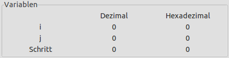
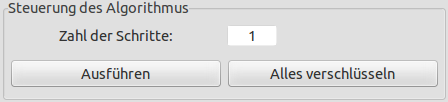
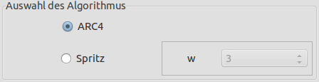

Willkommen zum Hilfetext der Visualisierung des ARC4/Spritz-Algorithmus. Diese Hilfe beschreibt die Punkte:
Natürlich müssen Sie nicht alle Kapitel lesen, um das Plug-in bedienen zu können. Wenn Sie nicht an der Geschichte von RC4, seinem Algorithmus oder seinen Sicherheitsaspekten interessiert sind, können Sie auch direkt zu den Benutzerinstruktionen springen.
Bei RC4 beziehungsweise ARC4 handelt es sich um eine kryptografische Stromchiffre. Bekannt und verbreitet wurde sie vor allem durch die Verwendung in diversen Standards, wie zum Beispiel HTTPS, SSH1 oder WEP/WPA. Im Jahr 1987 entwickelte Ronald L. Rivest RC4 als Eigenmarke von RSA Security Inc., heute eine Tochtergesellschaft von EMC Corporation. Somit ist RC4 eigentlich kein öffentlich zugänglicher Krypto-Algorithmus. Alleged RC4 (ARC4) dagegen basiert auf einer Quelltext-Veröffentlichung aus dem Jahr 1994 aus anonymer Quelle. Nun ist es Open-Source und kann frei verwendet werden.
Wie bei allen Stromchiffren wird bei ARC4 eine (pseudo-)zufällige Bitfolge erzeugt, die als Schlüsselstrom dient und mit dem Klartext mittels XOR verknüpft wird. Das Resultat ist der Geheimtext. Grundlage für die Erzeugung des Bit-Stroms ist bei RC4 eine sogenannte S-Box. Diese S-Box ist ein Bytevektor mit 256 Elementen, die zunächst mit den Werten 0 bis 255 gefüllt und anschließend mithilfe eines geheimen Schlüssels permutiert werden. Nach dieser Initialisierung der S-Box beginnt die eigentliche Erzeugung des Bit-Stroms durch eine festgelegte Rechenvorschrift, die in jedem Schritt zwei Werte in der S-Box miteinander vertauscht. Hierfür sind nur recht einfache Rechenschritte erforderlich, wodurch der Algorithmus sehr leicht in Hard- und Software umgesetzt werden kann und relativ schnell (im Vergleich zu anderen Stromchiffren) berechenbar ist.
Der Algorithmus selbst gestaltet sich wie folgt. Zunächst wird ein Bytevektor (genannt S-Box) mit initialen Werten belegt:
k[] := Schlüssel der Länge 5 bis 256 Byte L := Länge des Schlüssels (in Byte) s[] := Byte-Vektor der Länge 256 (S-Box) Für i = 0 bis 255 s[i] = i j = 0 Für i = 0 bis 255 j = (j + s[i] + k[i mod L]) mod 256 vertausche s[i] und s[j]
Die eigentliche Generierung des Bitstroms und die Verschlüsselung gestalten sich folgendermaßen:
klar[] := Klartext der Länge X cipher[] := Vektor zum Speichern des Geheimtextes i = 0 j = 0 Für n = 0 bis X-1 i = (i + 1) mod 256 j = (j + s[i]) mod 256 vertausche s[i] und s[j] zufall = s[ (s[i] + s[j]) mod 256 ] cipher[n] = zufall XOR klar[n]
Eine Verbesserung von RC4 wurde am 27. Oktober 2014 von Ronald Rivest und Jacob Schuldt unter dem Namen "Spritz" vorgestellt. Im Grunde sind die Algorithmen von Spritz und RC4 gleich, nur einige wenige Rechenvorschriften wurden leicht abgeändert. Zudem wurde ein neuer Parameter w eingeführt, der ungerade Werte von 1 bis 255 annehmen kann und zu einer erhöhten Sicherheit beitragen soll. Genaueres zu Spritz finden Sie in den unten aufgelisteten Verweisen (vor allem in dem Artikel von Bruce Schneier).
Für die Sicherheit von RC4 gilt grundsätzlich dasselbe wie für alle Stromchiffren. Diese sind nur dann sicher, wenn sich der zufällige Bitstrom nicht wiederholt bzw. nicht vorhersagbar ist. Hierzu ist es notwendig, dass der Schlüssel, der zur Initialisierung benutzt wird, nur einmal verwendet wird und geheim bleibt. Wie bei allen Stromchiffren bietet auch RC4 keinerlei Integritätsschutz. Eine Änderung eines Bits im Geheimtext führt direkt zur Änderung des entsprechenden Bits im Klartext.
Einige zum Teil gravierende Schwächen von RC4 zeigten Scott Fluhrer, Itsik Mantin und Adi Shamir 2002 in ihrer Arbeit Weaknesses in the Key Scheduling Algorithm of RC4 auf. Diese Schwächen beziehen sich hauptsächlich auf die Ableitung des internen Initialzustandes von RC4 aus dem Schlüssel, die sich aber auch auf die Generierung des Zufallsbitstroms auswirken. In dem sehr mathematisch formulierten Dokument wird anhand eines leicht abgeänderten Algorithmus aufgezeigt, dass sich bestimmte Bitmuster im Schlüssel in bestimmten Bitmustern innerhalb der S-Box von RC4 manifestieren und sich so aus dem initialen Zustand dieser je nach Länge des eingesetzten Schlüssels große Teile des Schlüssels wieder ableiten lassen. Die Autoren zeigen, dass diese Schwäche (in verminderter Schwere) auch auf den standardmäßigen RC4-Algorithmus zutrifft. Zudem korreliert offenbar der Input eines Schlüssels aus einer bestimmten (relativ großen) Menge an schwachen Schlüsseln sehr stark mit dem Output des Pseudozufallsgenerators, wodurch sich effektive Algorithmen entwickeln lassen, um die Sicherheit von RC4 zu kompromittieren. Da ein Verfahren von Shamir und Mantin bereits mit dem zweiten Wort des Outputs des Zufallsgenerators den Unterschied des Outputs zu wirklich zufälligen Bitfolgen erkennen kann, wurde von ihnen empfohlen, die ersten zwei Wörter des Outputs grundsätzlich zu verwerfen und nicht zur Verschlüsselung zu verwenden. Jedoch zeigte sich später, dass auch bei Verwerfen der ersten beiden Wörter eine Vorhersage bzw. Zurückrechnung auf den Schlüssel oder auf Teile davon mit vertretbarem Aufwand realisierbar ist (der Aufwand beträgt hierfür ungefähr 221; in der Kryptografie fordert man heutzutage für sichere Verfahren jedoch einen Aufwand von mindestens 280).
Eine weitere, extrem schwerwiegende Schwachstelle ergibt sich wie folgt: Der Schlüssel K, den man RC4 übergibt, besteht aus einem geheimen Teil sec und einem sogenannten Initialisierungsvektor IV, der öffentlich und damit auch dem Angreifer bekannt ist (wie es zum Beispiel in WEP der Fall ist), sodass K = sec + IV. Wird für den geheimen Teil des Schlüssels öfters derselbe Wert verwendet, so ist es einem Angreifer mit geringem Aufwand möglich, aus den entsprechenden Outputs und den bekannten Initialisierungsvektoren auf den geheimen Teil des Schlüssels zurückzurechnen, wobei der nötige Aufwand natürlich von der Länge des IV und des Schlüssels abhängig ist. Da in der Praxis die ersten Wörter des Klartextes oftmals immer die gleichen sind bzw. sich leicht erraten lassen (da sie zum Beispiel in Protokollen zwischen Server und Client aus Zeitstempeln, der Identität des Clients oder ähnlichem bestehen), so ist in der Praxis auf diese Weise sogar ein Ciphertext-only-Angriff möglich: Hierbei hat der Angreifer nur den verschlüsselten Text zur Verfügung, um die Sicherheit des eingesetzten Verfahrens zu brechen. Dabei unterscheiden sich das Verfahren und der Aufwand für den Angriff, je nachdem, ob der IV auf sec folgt oder umgekehrt. Fluhrer, Mantin und Shamir zeigen im oben genannten Dokument zudem Möglichkeiten auf, wie sich diese Schwächen in der Praxis konkret gegen bestimmte Verfahren, wie zum Beispiel WEP, einsetzen lassen.
Andreas Klein beschrieb 2006 in seiner Arbeit Attacks on the RC4 stream cipher einen weiteren Angriff, der auf der Attacke von Fluhrer, Mantin und Shamir (auch FMS-Angriff genannt) basiert. Hierbei beobachtet er das Verhalten des Algorithmus in der Phase der Schlüsselgenerierung und dessen Output und kann hierdurch recht effizient auf einen frühen Zustand der S-Box zurückrechnen. Zudem zeigt er, dass der beschriebene Angriff auch dann erfolgreich eingesetzt werden kann, wenn die ersten 256 Byte des Outputs des Algorithmus nicht zur Verschlüsselung verwendet sondern verworfen werden. Deshalb empfiehlt er, den Output der ersten 12 Runden komplett zu ignorieren, um einen Angriff unmöglich zu machen (wobei der Autor eine Runde als 256 Byte Output definiert).
Im März 2013 beschrieben AlFardan, Bernstein, Paterson, Poettering und Schuldt ein Angriffsszenario, bei dem ein potenzieller Angreifer mehrere RC4-verschlüsselte Nachrichten, die über eine TLS-Verbindung gesendet werden, mithorcht, um auf den ursprünglichen Klartext zu schließen. Hierbei ist es jedoch nötig, dass derselbe Klartext über mehrere Verbindungen versendet wird. Hierfür nutzen die Autoren eine statistische Neigung der Schlüsselgenerierung von RC4, die eine Unterscheidung von wirklich zufälligen Bits möglich macht und letztendlich zum Brechen von RC4 führt. Die genannten Autoren empfehlen deshalb, auf RC4 zu verzichten und stattdessen sichere Cipher Suites (standardisierte Sammlung kryptografischer Algorithmen) zu verwenden (wie z.B. AES-GCM).
Laut einem Artikel vom 20.01.2015, der auf der deutschen IT-News-Website golem.de erschien, kündigten zwei Forscherteams unabhängig voneinander neue Angriffe auf RC4 an. Den ganzen Artikel kann man hier nachlesen.
über diese neuen Angriffe wurde in heise am 27.03.2015, und in Golem am 26.03.2015 berichtet.
Insgesamt raten heute alle relevanten Organisationen und ämter wie die Europäische Agentur für Netz- und Informationssicherheit (ENISA) oder das deutsche Bundesamt für Sicherheit in der Informationstechnik (BSI) von der praktischen Verwendung von RC4 ab und empfehlen, andere Verfahren zu nutzen. Hierfür bieten sich zum Beispiel die Stromchiffren Rabbit oder Snow 3G an bzw. die Blockchiffre Advanced Encryption Standard (AES), die aktuell vermutlich am häufigsten genutzt wird. Seit Februar 2015 hat die IETF die Benutzung von RC4 in TLS mit dem RFC 7465 untersagt (vergleiche die Heise-Meldung vom 20.02.2015).
Starten Sie die Visualisierung von ARC4, indem Sie im Menüpunkt Visualisierungen den Punkt ARC4 / Spritz anklicken. Daraufhin öffnet sich ein neues Fenster. In diesem Fenster sehen Sie oben einen beschreibenden Text zur Visualisierung und zur Benutzung. Anweisungen zur Nutzung und weitere Informationen finden Sie auch in den Tooltips, die eingeblendet werden, wenn Sie mit dem Cursor über ein Element, wie zum Beispiel einen Druckknopf (Button), fahren.
Unter dem Text finden Sie eine mit Byte-Vektor bezeichnete, zweidimensionale Matrix. Diese stellt die S-Box des Algorithmus dar und ist bereits mit den initialen Werten 0 bis 255 in hexadezimaler Darstellung gefüllt.
Rechts davon finden Sie einen Gruppierungs-Kasten mit dem Namen Variablen. Hier sehen Sie die internen Variablenwerte i und j, sowie die Anzahl der bereits ausgeführten Schritte des Algorithmus. Alle drei Werte sind zu Beginn mit 0 vorbelegt und werden sowohl in dezimaler als auch in hexadezimaler Schreibweise dargestellt.

Unter diesem Gruppierungs-Kasten finden Sie einen weiteren, mit dem Sie den Ablauf des Algorithmus steuern können. In das Feld Zahl der Schritte kann eine positive Zahl eingetragen werden. Mit einem Klick auf Ausführen führt der Algorithmus die eingetragene Zahl an Schritten durch. Mit einem Klick auf Alles verschlüsseln wird der Algorithmus auf einmal vollständig durchlaufen. Beachten Sie, dass der Algorithmus hier 256 + Anzahl der Klartext-Bytes Schritte hat. 256 davon werden zur Initialisierung der S-Box benötigt. In den übrigen Schritten werden dann für den Klartext Zufalls-Bytes zur Verschlüsselung generiert und XOR-verknüpft.

Im Gruppierungs-Kasten darunter (Auswahl des Algorithmus) kann man den gewünschten Algorithmus wählen. Hierbei stehen der standardmäßige ARC4 und die neuere Version Spritz zur Verfügung. Bei der Auswahl von Spritz wird noch ein weiterer Parameter w benötigt. Dieser lässt sich über die Dropdown-Box einstellen, die aktiv wird, sobald man Spritz auswählt. Zulässige Werte für w sind dabei alle ungeraden Zahlen zwischen 1 und 255 (inklusive der Randwerte 1 und 255). Man kann die Auswahl des Algorithmus nur ändern, solange der Algorithmus noch nicht gestartet wurde.

Darunter befindet sich ein weiterer Gruppierungs-Kasten namens Diverse Einstellungen. Hier können Sie mit den Radio-Buttons Änderungen hervorheben und Änderungen nicht hervorheben bestimmen, ob die letzte Änderung (d.h. die am letzten Tausch beteiligten Elemente) in der S-Box farbig dargestellt werden soll. Mit dem Button Zähler auf Null setzen Sie den Algorithmus auf Schritt 0 zurück, d.h. dass alle Operationen rückgängig gemacht werden (Klartext und Schlüssel bleiben aber unverändert). Mit dem Button Randomisieren können Sie das Plug-in dazu bewegen, Schlüssel und Klartext zufällig neu zu generieren. Das funktioniert natürlich nur, solange der Algorithmus noch nicht gestartet wurde.

Unter der S-Box befinden sich 4 Vektoren, die den Schlüssel, den Klartext, die generierten Zufallszahlen und den resultierenden verschlüsselten Text repräsentieren. In dieser Visualisierung können alle eine Länge von einem bis 16 Byte annehmen. Die Schlüssel und Klartextlänge muss nicht identisch sein. Zu jedem der 4 Vektoren gibt es einen Button In Zwischenablage kopieren: Damit können Sie die Werte des jeweiligen Vektors in die Zwischenablage Ihres Systems kopieren, um diese weiter zu verwenden. Der Schlüssel und der Klartext sind nach dem Aufruf der Visualisierung bereits mit (pseudo-)zufälligen Werten vorbelegt. Sie können aber auch diese beiden Werte selbst festlegen. Hierzu klicken Sie auf den Button Auswählen des jeweiligen Vektors.

In beiden Fällen öffnet sich ein Wizard, in dem Sie den Schlüssel bzw. den Klartext in hexadezimaler Darstellung eingeben können. Es stehen Ihnen jeweils bis zu 16 Bytes (also 32 Hex-Zeichen) zur Verfügung. Falsche Eingaben, wie Buchstaben, die keine Hex-Zeichen darstellen, werden nicht übernommen und mit einer entsprechenden Meldung unter dem Eingabefeld gemeldet. Sie können die Eingabe jederzeit mit Abbrechen beenden, wobei der vor dem Aufruf des Wizards gespeicherte Schlüssel/Klartext unverändert bleibt. Sobald Sie eine gerade Anzahl an Hex-Zeichen eingegeben haben, können Sie den Button Fertigstellen anklicken, um Ihre Eingabe zu übernehmen. Der Wizard berechnet dann aus ihrer Eingabe die Schlüssellänge. Beachten Sie, dass Sie Schlüssel und Klartext nur dann ändern können, wenn Sie den Algorithmus noch nicht mit einem Klick auf Ausführen gestartet haben, die Anzahl der erledigten Schritte also noch auf 0 steht.
Bemerkung: Im ARC4-Visualisierungs-Plug-in muss der Schlüssel zwischen einem und 16 Bytes lang sein; im ARC4-Krypto-Plug-in kann die Schlüssellänge zwischen 5 und 256 Bytes liegen (entsprechend der Spezifikation des Algorithmus).

Haben Sie den Algorithmus vollständig durchgearbeitet, ist der Verschlüsselungsvorgang abgeschlossen und der vollständige verschlüsselte Text Ihres Klartextes ist zu sehen. Wenn Sie danach nochmals auf Ausführen oder Alles verschlüsseln klicken, wird eine Nachricht erscheinen, die Sie darauf hinweist, dass der Algorithmus fertig ist. Um die Visualisierung ein weiteres Mal zu starten und von Neuem zu beginnen, können Sie auf den kleinen Button Neustart klicken, rechts oben im Fenster, direkt links von den Buttons Minimieren und Wiederherstellen.

Als letzter Punkt dieser Hilfe folgt nun ein kleines Beispiel zur Nutzung der beiden ARC4-Plug-ins (Visualisierungs-Plug-in und Krypto-Plug-in). Hierbei wird ein Text in beiden Plug-ins verschlüsselt.
Bemerkung: Mit dem ARC4 Krypto-Plug-in kann man Klartexte verschlüsseln bzw. Geheimtexte entschlüsseln, die eine beliebige Länge haben (gespeichert in einer Datei oder im JCT-Editor). Im Gegensatz dazu muss der Input des ARC4-Visualisierungs-Plug-ins eine Länge von genau 16 Bytes haben (der Zweck des Visualisierungs-Plug-ins ist ja auch nicht die Verschlüsselung von Massendaten sondern die exemplarische Visualisierung).
Zunächst muss ein gemeinsamer Klartext festgelegt werden. Da dieser in der Visualisierung nur 16 Byte lang sein kann, muss man den Klartext in diesem Beispiel auf diese 16 Byte beschränken.
AA BB CC DD EE FF 00 11 22 33 44 55 66 77 88 99
In der Visualisierung klickt man nach dem öffnen auf den Button Auswählen des Klartextes und gibt in dem sich
öffnenden Wizard die oben stehende Zeichenfolge ein (ohne Leerzeichen). Danach schließt man den Wizard mit einem Klick auf
Fertigstellen.
Im Krypto-Plug-in muss zuerst eine neue Datei geöffnet werden. Hierzu klickt man oben links im JCT auf Datei->Neu->Leere
Datei im Hexeditor. In den leeren Bereich der Datei klickt man mit der linken Maustaste
und im Kontextmenü dann auf Einfügen. Als Menge an Daten gibt man 16 Byte an und klickt auf OK, woraufhin im
Hexeditor eine neue Zeile erscheint. In diese Zeile gibt man dann die oben stehende Zeichenfolge ein, indem man in jede Zelle in der
Zeile jeweils 2 Hexzeichen eintippt.
Als nächstes braucht man einen Schlüssel. Für diesen wird hier folgender Wert gewählt:
00 11 22 33 44 55 66 77 88 99 AA BB CC DD EE FF
In der Visualisierung klickt man hierzu auf den Button Auswählen. Es öffnet sich ein Wizard, in dem man den
Schlüssel eingibt und anschließend Fertigstellen klickt.
Im Krypto-Plug-in gibt man den Schlüssel über die vorgegebene Eingabezeile des
Eingabedialogs ein (durch Eintippen oder aus dem Clipboard per Klick auf Kopieren im Kontextmenü).
Um den Text schließlich zu verschlüsseln, klickt man in der Visualisierung auf Alles verschlüsseln (oder man schaut sich den Algorithmus schrittweise an). Im Krypto-Plug-in sind die Optionen Verschlüsseln und ARC4 zu aktivieren, dann klickt man unten auf Fertigstellen.
In der Visualisierung steht das Ergebnis unten in dem Vektor für den Geheimtext. Im Krypto-Plug-in öffnet sich im Hauptfenster ein neuer Hexeditor mit dem resultierenden Text. In beiden Fällen sollte das Ergebnis wie folgt lauten:
2F E0 60 8A 7C D8 61 94 DA 6A FD 6E F3 32 F5 0D

Weitere Informationen zum Thema Kryptografie und (A)RC4 finden Sie beispielsweise unter:
Online-Hilfe erstellt am 29.03.2015. Update 2020.
Visualisierungs-Plug-in zu ARC4/Spritz erstellt bis März 2015 in einem Projekt der FH-Hagenberg.